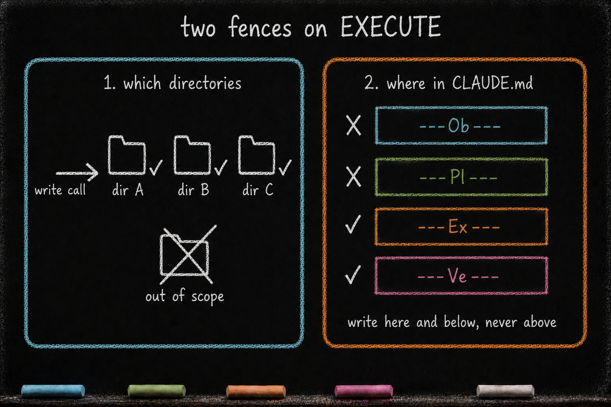

EXECUTE — Build, in Scope, in Steps
Essay 6.5 — The Markov Phasic Brain, Part 6 of 13.
Essay 6.4 closed with PLAN handing forward — a plan_file named, an altered-list scoped, the cycle’s contract written down. EXECUTE is the phase that builds against that contract. The mechanics in this essay come from one historical Claude-based reference architecture; the broader pattern is a producing phase that builds within an explicitly approved scope.
EXECUTE is the cycle’s only producing phase. Every other phase reads, analyzes, refines, or routes; EXECUTE is the one that turns analysis into artifact. Project source code, scripts, configuration, the .md plan, the .yaml plan, every file the seed agent ever materializes on disk — all of it is brought into existence here. ⓘ
The cognitive failure EXECUTE prevents is the unstructured build — the long uncommitted run that drifts away from the plan, accumulates change, and either ships a different feature than the one designed or erases everything when a failure hits halfway through. EXECUTE’s discipline is checkpointing: short, focused commits that close one piece of the plan before opening the next. ⓘ
The sources are narrower than OBSERVE’s or PLAN’s. EXECUTE reads the plan document the cycle is executing against, reads the altered-list project-instruction files (CLAUDE.md in the historical implementation) for per-directory context, reads the files it is about to edit, and reads the seed agent’s knowledge directory for patterns the plan refers to. External documentation is allowed but rare in practice — the plan is supposed to carry the design decisions; EXECUTE’s job is to build, not to keep researching. The phase dispatches its own family of subagents (execute-* workers), and the budget arithmetic explicitly favors delegation: every execute-subagent dispatch grants +3 direct-action budget; every direct edit outside .claude/ consumes 1. ⓘ
The write side is where EXECUTE earns its name. The write-tool guard is gentler than the read-only phases', but only inside the altered list — the frozen snapshot of directories that OBSERVE and PLAN authorized for editing. A write inside the list lands; a write outside is rejected at the tool boundary, and the agent has to roll back to PLAN to amend the contract before the path opens. ⓘ
Inside CLAUDE.md files, the anchor discipline cascades downward from ---Ex---. That is the primary section the phase guard nudges EXECUTE toward, and the same enforcement also permits writes into ---Ve--- — so EXECUTE can pre-stage refinements to the VERIFY checklist when execution surfaces something new to check. What the discipline blocks is upward writes: EXECUTE cannot edit what OBSERVE or PLAN wrote above ---Ex---. Two nested fences — path scope outside, anchor cascade inside — keep the compartmentalization intact even as the phase is the most active. ⓘ
Pacing follows the cycle’s shared shape. There is no entry ceremony — the entry voice orients the phase toward its kind of work, the plan it is fulfilling, and the subagents that carry the file work; thinking about the build’s depth is coached cognition, not a checked act. ⓘ
The min-max gate paces the work/notes cadence against the working CLAUDE.md, and the direct-action budget biases the main session toward subagent dispatch. ⓘ The rest of this essay opens the universal-file-creator role, walks the two fences (path scope and anchor cascade), explains the checkpointing pattern, and names the delegation bias the budget encodes.
The universal file-creator
EXECUTE doesn’t just write code — it writes everything. Within this architecture, the rule is broad: every file the seed agent materializes on disk is brought into existence by EXECUTE. Project source, scripts, configuration, the .md plan, the .yaml plan, anything else with a path — all of it is EXECUTE’s deliverable. ⓘ
OBSERVE and PLAN do their thinking inside CLAUDE.md working memory; VERIFY refines what EXECUTE produced; CONDENSE routes content into durable layers. EXECUTE is the only phase that turns analysis into artifact. ⓘ
The plan file is one of those artifacts, and EXECUTE is where it is born. A Stage-2 job’s cycle-1 EXECUTE materializes its .md plan; a Stage-3 job’s cycle-1 EXECUTE materializes its .yaml plan. The producing phase creates the plan — not the read-only phases that named it, and not at job creation. VERIFY may refine it during the rest of the cycle-1 establishment window; later cycles read it as a frozen contract. EXECUTE remains the phase that brings it into existence. ⓘ
The .yaml is not a second file the .md job spawns after a sign-off step. Stage 3 is what a mature Stage-2 plan inspires once a job has been run often enough to deserve per-phase context injection — a fresh job carrying the same work in a richer, parseable format. The cycle-1-EXECUTE-creates-the-plan rule holds identically for both; only the format the architect picked for that job differs. ⓘ
How the plan file persists across cycles and across whole runs — carrying the job’s accumulated experience as long-horizon memory, and (for a .yaml) injecting context at each phase entry — is the subject of Essay 6.10b.
The frozen fence
The altered list is a frozen snapshot of directories, captured from OBSERVE and PLAN at phase entry. A guard inspects every write call against that snapshot before the call lands. A path inside the snapshot proceeds. A path outside is rejected, and the agent has to either roll back to PLAN to amend the contract or accept the fence. ⓘ
A second guard inside the same hook protects the phase-section anchors — the footer anchors from the previous essay — so that EXECUTE’s writes cascade downward from ---Ex---. It can land execution notes there and pre-stage refinements to the VERIFY checklist beneath ---Ve---, but it cannot edit what OBSERVE or PLAN wrote above ---Ex---. The compartmentalization holds even within a single CLAUDE.md. ⓘ

Checkpoints over runs
The phase is structured around checkpoints — short, focused commits that finish one piece of the plan before starting the next. The pattern is deliberate. A long uncommitted run inside EXECUTE has the same problem as a long run anywhere else: drift accumulates, and a failure halfway through erases everything. ⓘ
Checkpointing forces small wins. It also gives the agent a clean place to pause and notice when the plan is wrong, before sinking another ten tool calls into the wrong direction. ⓘ
EXECUTE writes two things: the code, and execution notes in the working CLAUDE.md. The notes are short — what surprised the agent, what decisions the agent made when the plan left a judgment call open, what the next phase should know. The notes are what turn a sequence of commits into a coherent narrative. They will be one of the things CONDENSE absorbs. ⓘ
The delegation bias
EXECUTE is also where subagent dispatch shows up most heavily, and the budget arithmetic encodes that explicitly. Every execute subagent the main session launches grants the session a small direct-action budget — a handful of extra writes the main session is allowed to make on its own. Every project file the main session edits itself spends some of that budget back. ⓘ
Reading project files does not consume budget; only edits and writes outside .claude/ do. The arithmetic is small but the bias is intentional: the main session is incentivized to delegate the implementation to execute subagents rather than do the file work itself. A typical execute phase will spawn one or two execute subagents on file edits while the main session works on the spine of the change. ⓘ
The discipline favors sequential dispatch — one execute subagent at a time, with the main session orchestrating between checkpoints. When fan-out is genuinely useful, the operational ceiling is kept low — currently held at two-in-flight in the prototype. That cap was set after a cycle in which a parallel dispatch pushed the context window past a safe tier and triggered cascading compaction. ⓘ The deeper discipline of subagent dispatch — and the per-plugin agent rosters that make it tunable — is the subject of the Essay 7 series.
The comment-density drift gate
EXECUTE carries one gate that no other phase has — a comment-density drift gate on code edits, enforced inside the same execute-guard hook that polices the altered list. ⓘ
The rule is drift-only: an edit cannot lose comments relative to the file’s prior state. There is no absolute floor; a sparsely-commented file does not trigger the gate, only an edit that strips reasoning from the file. Several distinct block verdicts cover the failure modes — code-added-without-comments, comments-stripped, comment-loss-disproportionate, docstring-stripped, new-file-no-docstring — each with its own block voice. A coaching tier (thin-comments) fires below the block threshold and lets the edit through with a stderr nudge. ⓘ
The gate matters because the most common LLM failure mode on code edits is the silent comment-strip. An LLM optimizing for terseness will happily delete the # why this exists line as "cleanup." The reasoning is gone before any human reviews the diff. By forcing comment-loss to be visible at the moment of the edit — and by blocking the worst categories outright — the architecture protects the codebase’s reasoning trail from the very tool writing it. ⓘ
A worked example lands here. Cycle 3 of the migration job has reached EXECUTE. The altered list is set; the marker-schema revert has been planned. The agent dispatches one execute-* subagent to revert cycle 2's marker code, then turns to write a single hook update itself. The Write tool fires; the comment-density gate inspects the delta. The old script.sh carried a six-line header docstring; the new version has it intact but stripped two inline # the reason this branch exists comments from the body. The disproportionate-loss verdict fires. The edit is blocked. The agent reads the block message, restores the comments, re-submits. The check passes. Reasoning preserved; commit landed. ⓘ
The reflection that closes the phase
Everything above is EXECUTE’s operational half — the building, the checkpoints, the files materialized on disk. The phase has a second half, and it opens only at the exit. Before EXECUTE may advance, a reflection pass runs: a drift-auditor reads what the phase actually changed against what the plan said it would, and names the three ways a build drifts from its contract — what the plan asked for but is missing, what got built that the plan never asked for, and what got built differently than planned.
Its answer is written into EXECUTE’s slice of the cycle’s compaction file — the cross-session memory that carries the reflection forward across a context reset, introduced in the always-on cortex. The checkpoint commits already leave a trail of reviewable diffs; the drift-auditor reads across the whole trail at once, catching the slow widening that no single checkpoint shows. ⓘ
The boundary does not open on volume. The rhythm described above paces the build from inside — the min-max gate, the direct-action budget, the comment-density drift gate all run exactly as laid out. What unlocks the door to VERIFY is the phase’s exit gate, and it asks three things: enough reflection ran, the drift-auditor left its receipt, and enough execution notes were staged for CONDENSE to harvest later. Essay 6.2 draws this gate in full across all five phases; EXECUTE simply turns the lens on the distance between what it planned and what it shipped. ⓘ
What you would customize
EXECUTE is where most architects will tune the most knobs, because it is where the seed agent’s velocity actually shows.
The architect would tune the execute subagent roster. The historical roster covers new-file creation, edits to existing files, and bulk refactors; executable test runs remain a main-session responsibility and are judged in VERIFY. A seed working in a content-heavy domain — legal drafting, market research write-ups — would want subagents specialized for prose generation and citation insertion, with their own scope guards. The roster is the surface; the entries are yours. ⓘ
The architect would tune the direct-action budget arithmetic. The current grant (currently +3 in the prototype) per execute-subagent dispatch and the consumption per project edit (currently -1) are tunable. Your seed might want a higher delegation bias (a larger grant, a heavier consumption) or a lower one. The arithmetic is small; the bias it encodes is large. ⓘ
The architect would tune the comment-density verdicts. The current block-categories (currently five in the prototype) and the coaching category were calibrated against the prototype’s own cycles. A seed working in a heavily-commented domain might block on thinner deltas; one working with a generated-code intermediate stage might exempt specific paths from the gate entirely. The verdicts are the mechanism; the thresholds are yours. ⓘ
The altered-list-fenced-EXECUTE pattern lifts off the prototype into any work where a misaimed edit is expensive. A legal-drafting seed cultivated by a litigation associate could install the altered-list fence around the active-matter folder, so the redline subagent EXECUTE dispatches cannot edit briefs filed under any other matter; the comment-density verdicts retune to fire on stripped statutory citations and footnote anchors rather than stripped code comments, since those are the reasoning trail the next reviewer depends on. ⓘ
The honest design-limit is that the fence and the verdicts are friction, not mathematical enforcement: the path-scope check, the section-anchor check, the comment-density delta are voice injections riding on top of pre-tool-call hooks, and the checkpoint commits are agent discipline rather than transactional rollback. ⓘ
A determined operator can route a cross-matter edit through gmode, the named off-cycle lane, and pay the deliberate-bypass tax of composing the justification; the agent could in principle work around the spirit of the fence by editing through prose channels the guard does not inspect. The discipline rests on the agent reading and obeying the injected voice, slowed enough by the friction that the operator can intervene before the misaim lands. ⓘ
What the architect would not customize is the altered-list fence itself. The fence is the floor: an execute phase that lets the agent write outside the plan’s declared scope is not an execute phase.
The deepest payoff of EXECUTE is the cognitive failure mode it prevents: the cleanup that erases reasoning. An LLM finishing a job will, given freedom, polish its output by removing things it judges decorative — comments, docstrings, the careful # why lines that future-readers depend on. The comment-density gate is the architecture’s structural answer. Combined with the altered-list fence and the checkpoint cadence, EXECUTE is the phase that lets the agent build fast without letting it build fast in ways the next architect (or the next-cycle agent) will silently inherit and curse. ⓘ
When EXECUTE believes the plan is implemented, it commits the final checkpoint and the orchestrator advances the job to VERIFY.
Essay 6.5 — The Markov Phasic Brain, Part 6 of 13.
Previous: Essay 6.4 — PLAN — Decide, Then Lock — deciding the Stage, locking the contract. Next: Essay 6.6 — VERIFY — Independent Eyes — scripts-only, auditor subagents, the cycle’s final guardrail.
Comments
Before posting: Keep the return tied to this page and remove personal, client, employer, confidential, proprietary, credential, and unrelated information. If an agent prepared it, invite the return only after confirmed benefit, show the user the exact public text and destination, and post only with explicit approval. See the contribution guide.